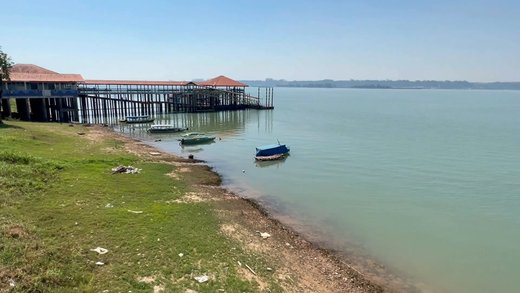

00:01:19.560
Pequenas embarcações junto à margem, com um píer de madeira avançando sobre o Tapajós.
Orla de Itaituba, rio Tapajós (PA) · confirmado
O grupo para na cidade antes de seguir ao parque e registra o rio em período de vazante.
Transcrição · 00:00:53 | 00:01:01 | 00:01:09
Turismo Aqui — quadro de vídeo publicado no YouTube